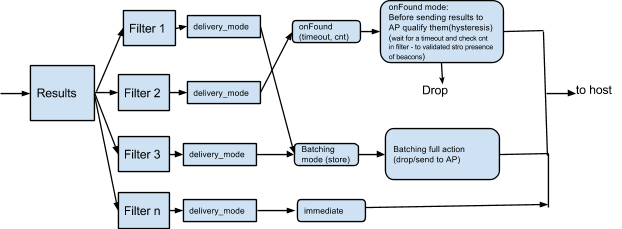

The Host Controller Interface (HCI) is used for interacting with a Bluetooth controller.
This document provides a list of Bluetooth (BT) and Bluetooth Low Energy (BLE) requirements. The aim is for Host BT stack vendors and BT controller vendors to conform to these platform requirements in order to use the feature set described below
The Bluetooth Core 4.1 Specification, referred to in this document as the "BT 4.1 core specification," is available on the Bluetooth SIG website along with other adopted documents.
Android, as an open platform, has a matrix of software releases, OEMs, vendors, and platform and chip capabilities.
To manage the varying landscape and to manage migrations, a design philosophy of allowing BT controllers to expose their capabilities (beyond the standard BT 4.1 core specification) is described in this document. The host BT stack can then use these capabilities to determine which features to enable.
One goal of Android is to support open standards after ratification in a Bluetooth specification. If a feature described below becomes available in standard HCI methods in a future Bluetooth specification, we will lean towards making that approach the default.
Vendor-specific command:
LE_Get_Vendor_Capabilities_Command
OCF (OpCode Command Field): 0x153
| Command Parameter | Size | Purpose |
|---|---|---|
| NA | Empty command parameter list |
A Command Complete event will be generated for this command.
| Return Parameter | Size | Purpose |
|---|---|---|
Status |
1 octet | Command Complete status |
max_advt_instances |
1 octet | Number of advertisement instances supported |
offloaded_resolution_of_private-address |
1 octet | BT chip capability of RPA; if supported by a chip,
it needs enablement by the host. 0 = Not capable 1 = Capable |
total_scan_results_storage |
2 octets | Storage for scan results in bytes |
max_irk_list_sz |
1 octet | Number of IRK entries supported in the firmware |
filtering_support |
1 octet | Support for filtering in the controller. 0 = Not supported 1 = Supported |
max_filter |
1 octet | Number of filters supported |
activity_energy_info_support |
1 octet | Supports reporting of activity and energy information. 0 = Not capable 1 = Capable |
version_supported |
2 octets [0x00, 0x60] |
Specifies the version of the Google feature spec supported. byte[0] = major number byte[1] = minor number |
total_num_of_advt_tracked |
2 octets | Total number of advertisers tracked for
OnLost/OnFound purposes |
extended_scan_support |
1 octet | Supports extended scan window and interval |
debug_logging_supported |
1 octet | Supports logging of binary debug information from controller |
LE_address_generation_offloading_support |
1 octet | 0 = Not supported 1 = supported |
The max_advt_instances parameter represents the total
advertisement instances in the controller. The range of
advt_instance IDs will be 0 to
max_advt_instances-1.
An advertisement instance with an ID equal to 0 will map to an existing (default/standard) HCI instance. When operating on a default/standard HCI interface, the standard HCI command set should be used.
The objectives of multi-advertiser support are the following:
max_advt_instances)To keep this specification close to existing standards, the following vendor-specific commands are provided. They are derived from the Bluetooth Core 4.1 Specification.
OCF: 0x154
| Command Parameter | Size | Purpose |
|---|---|---|
Multi_advt_opcode |
1 octet | 0x01 - Set_Advt_Param_Multi_Sub_Cmd0x02 - Set_Advt_Data_Multi_Sub_Cmd0x03 - Set_Scan_Resp_Data_Multi_Sub_Cmd0x04 - Set_Random_Addr_Multi_Sub_Cmd0x05 - Set_Advt_Enable_Multi_Sub_Cmd |
A Command Complete event will be generated for this command.
| Return Parameter | Size | Purpose |
|---|---|---|
Status |
1 octet | Command Complete status |
Multi_advt_opcode |
1 octet | 0x01 - Set_Advt_Param_Multi_Command0x02 - Set_Advt_Data_Multi_Command0x03 - Set_Scan_Resp_Data_Multi_Command0x04 - Set_Random_Addr_Multi_Command0x05 - Set_Advt_Enable_Multi_Command |
Base reference (referred to below as "spec"): The BT 4.1 core specification, page 964 (LE Set Advertising Parameter Command)
Sub OCF: 0x01
| Sub-command Parameter | Size | Purpose |
|---|---|---|
Advertising_Interval_Min |
Per spec | Per spec |
Advertising_Interval_Max |
Per spec | Per spec |
Advertising_Type |
Per spec | Per spec |
Own_Address_Type |
Per spec | Per spec |
Own_Address |
Per spec | Per spec |
Direct_Address_Type |
Per spec | Per spec |
Direct_Address |
Per spec | Per spec |
Advertising_Channel_Map |
Per spec | Per spec |
Adverstising_Filter_Policy |
Per spec | Per spec |
Advertising_Instance |
1 octet | Specifies the applicability of the above parameters to an instance |
Tx_power |
1 octet | Transmit_Power Unit - in dBm (signed integer) Range (-70 to +20) |
The Own_Address parameter could be a
host-configured address at the time of setting up this
multi-advertisement instance. This provides the ability to have a
resolvable private address at the time of the transmit of the first
beacon. Advertisement on an instance will continue irrespective of
the connection. The host BT stack could issue a command to start
advertisement on an instance, post connection.
A Command Complete event will be generated for this command as
specified in the Bluetooth Core 4.1 Specification, per the above
command. The controller will respond with a non-success (invalid
parameter) code if the advertising instance or Tx_Power
parameters are invalid.
| Return Parameter | Size | Purpose |
|---|---|---|
Status |
1 octet | Command Complete status |
Multi_advt_opcode |
1 octet | 0x01 [Set_Advt_Param_Multi_Sub_Cmd] |
Base reference: The BT 4.1 core specification, page 969 (LE Set Advertising Data Command)
Sub OCF: 0x02
| Sub-command Parameter | Size | Purpose |
|---|---|---|
Advertising_Data_Length |
Per spec | Per spec |
Advertising_Data |
Per spec | Per spec |
Advertising_Instance |
1 octet | Specifies the applicability of the above parameters to an instance |
A Command Complete event will be generated for this command as
specified in the Bluetooth Core 4.1 Specification, per the above
command. The controller will respond with a non-success code if the
advertising instance or Tx_Power parameters are
invalid.
| Return Parameter | Size | Purpose |
|---|---|---|
Status |
1 octet | Command Complete status |
Multi_advt_opcode |
1 octet | 0x02 [Set_Advt_Data_Multi_Sub_Cmd] |
Base reference: The BT 4.1 core specification, page 970 (LE Set Scan Response Data Command)
Sub OCF: 0x03
| Sub-command Parameter | Size | Purpose |
|---|---|---|
Scan_Response_Data_Length |
Per spec | Per spec |
Scan_Response_Data |
Per spec | Per spec |
Advertising_Instance |
1 octet | Specifies the applicability of the above parameters to an instance |
A Command Complete event will be generated for this command as
specified in the Bluetooth Core 4.1 Specification, per the above
command. The controller will respond with a non-success code
(invalid parameter) if the advertising instance or
Tx_Power parameters are invalid.
| Return Parameter | Size | Purpose |
|---|---|---|
Status |
1 octet | Command Complete status |
Multi_advt_opcode |
1 octet | 0x03 [Set_Scan_Resp_Data_Multi_Sub_Cmd] |
Base reference: The BT 4.1 core specification, page 963 (LE Set Random Address Command)
Sub OCF: 0x04
| Sub-command Parameter | Size | Purpose |
|---|---|---|
| Random Address | Per spec | Per spec |
Advertising_Instance |
1 octet | Specifies the applicability of the above parameters to an instance |
A Command Complete event will be generated for this command.
| Return Parameter | Size | Purpose |
|---|---|---|
Status |
1 octet | Command Complete status |
Multi_advt_opcode |
1 octet | 0x04 [Set_Random_Addr_Multi_Sub_Cmd] |
Base reference: The BT 4.1 core specification, page 971 (LE Set Advertise Enable Command in that core specification)
OCF: 0x05
| Sub-command Parameter | Size | Purpose |
|---|---|---|
Advertising_Enable |
1 octet | A value of 1 means enable. Any other value means disable. |
Advertising_Instance |
1 octet | Specifies the applicability of the above parameters to an instance. Instance 0 means a standard HCI instance. |
A Command Complete event will be generated for this command.
| Return Parameter | Size | Purpose |
|---|---|---|
Status |
1 octet | Command Complete status |
Multi_advt_opcode |
1 octet | 0x05 [Set_Advt_Enable_Multi_Sub_Cmd] |
This feature allows the resolution of a private address in the controller firmware or hardware, which provides the following benefits:
OCF: 0x15C
| Command Parameter | Size | Purpose |
|---|---|---|
LE_local_IRK |
16 octet | The local device IRK used to generate the random resolvable address(es). |
tRPA_min |
2 octets | The minimum RPA generation timeout in seconds.
The controller must generate new resolvable addresses
for any advertising/scanning/connection events on or after this
timeout. Valid range: 300-1800 |
tRPA_max |
2 octets | The maximum RPA generation timeout in seconds.
The controller must generate new resolvable addresses for
any advertising/scanning/connection
events on or before this timeout. Valid range: tRPA_min-1800 |
| Return Parameter | Size | Purpose |
|---|---|---|
Status |
1 octet | The status of the command. Suggested HCI status values: 0x00 Success 0x01 Unknown command (if not supported) 0x12 Invalid command parameters (if any parameters are outside the given range) |
OCF: 0x155
| Command Parameter | Size | Purpose |
|---|---|---|
RPA_offload_opcode |
1 octet | 0x1 - Enable customer specific feature 0x2 - Add IRK to the list 0x3 - Remove IRK from the list 0x4 - Clear IRK list 0x5 - Read IRK list entry |
A Command Complete event will be generated for this command.
| Return Parameter | Size | Purpose |
|---|---|---|
Status |
1 octet | Command Complete status |
Event_RPA_offload_opcode |
1 octet | 0x1 - Enable customer specific feature 0x2 - Add IRK to the list 0x3 - Remove IRK from the list 0x4 - Clear IRK list 0x5 - Read IRK list entry |
Sub OCF: 0x01
| Sub-command Parameter | Size | Purpose |
|---|---|---|
enable_customer_specific_feature_set |
1 octet | 0x01 - Enable offloaded RPA feature 0x00 - Disable offloaded RPA feature |
RPA offload is required to be enabled by the host, based on the
chip capability. Refer to the
LE_Get_Vendor_Capabilities_Command. Each chip can have
a varying max_irk_list_sz in the firmware.
A Command Complete event will be generated for this command.
| Return Parameter | Size | Purpose |
|---|---|---|
Status |
1 octet | Command Complete status |
Event_cust_specific_feature_opcode |
1 octet | 0x01 [Enable customer-specific feature] |
Sub OCF: 0x02
| Sub-command Parameter | Size | Purpose |
|---|---|---|
LE_IRK |
16 octets | LE IRK (1st byte LSB) |
Address_Type |
1 octet | 0: Public address 1: Random address |
LE_Device_Address |
6 octets | Public or random address associated to the IRK (1st byte LSB) |
A Command Complete event will be generated for this command.
| Return Parameter | Size | Purpose |
|---|---|---|
Status |
1 octet | Command Complete status |
Event_cust_specific_feature_opcode |
1 octet | 0x02 [Add IRK to the list] |
LE_IrkList_AvailableSpaces |
1 octet | Available IRL list entries after current operation |
Sub OCF: 0x03
| Sub-command Parameter | Size | Purpose |
|---|---|---|
Address_Type |
1 octet | 0: Public address 1: Random address |
LE_Device_Address |
6 octets | Public or random address that associates to the IRK |
A Command Complete event will be generated for this command.
| Return Parameter | Size | Purpose |
|---|---|---|
Status |
1 octet | Command Complete status |
Event_cust_specific_feature_opcode |
1 octet | 0x03 [Remove IRK from the list] |
LE_IrkList_AvailableSpaces |
1 octet | Available IRL list entries after current operation |
Sub OCF: 0x04
| Sub-command Parameter | Size | Purpose |
|---|---|---|
| None |
A Command Complete event will be generated for this command.
| Return Parameter | Size | Purpose |
|---|---|---|
Status |
1 octet | Command Complete status |
Event_cust_specific_feature_opcode |
1 octet | 0x04 [Clear IRK List] |
LE_IrkList_AvailableSpaces |
1 octet | Available IRL list entries after current
operation [max_irk_list_sz] |
Sub OCF: 0x05
| Sub-command Parameter | Size | Purpose |
|---|---|---|
LE_read_IRK_list_entry-index |
1 octet | Index of the IRK list [0, max_irk_list_sz-1] |
A Command Complete event will be generated for this command.
| Return Parameter | Size | Purpose |
|---|---|---|
Status |
1 octet | Command Complete status |
Event_cust_specific_feature_opcode |
1 octet | 0x05 [Read IRK List Entry] |
LE_Read_IRK_List_entry |
1 octet | Index of the IRK that the host wants to read back (maximum IRK list size is 32) |
LE_IRK |
16 octets | IRK value |
Address_Type |
1 octet | 0: Public address 1: Random address |
LE_Device_Address |
6 octets | Public or random address associated to the IRK |
LE_Resolved_Private_Address |
6 octets | Current resolved resolvable private address of this IRK |
A design goal is to enhance how the Bluetooth LE Scan Response event notifications are delivered to the host, in order to save power in the host.
By reducing how often the controller notifies the host application
processor to scan results, the host application processor can stay in
idle/sleep longer. This reduces power consumption in the host. The
return parameter total_scan_results_storage of
LE_Get_Vendor_Capabilities_Command indicates the chip
capability for storage of scan results.
This feature focuses on the management and configuration of the LE Scan Results storage facility in the Bluetooth controller. The storage is used to temporarily batch advertisement data and scan data and metadata that are received by the controller for later delivery to the host.
Firmware shall support two types of batching, which can be engaged simultaneously:
OCF: 0x156
| Command Parameter | Size | Purpose |
|---|---|---|
Batch_Scan_opcode |
1 octet | 0x1 - Enable customer-specific feature 0x2 - Set Batch Scan Storage parameters 0x3 - Set Batch Scan parameters 0x4 - Read Batch Scan Result parameters |
A Command Complete event will be generated for this command. Enabling the customer-specific feature does not start the scan.
| Return Parameter | Size | Purpose |
|---|---|---|
Status |
1 octet | Command Complete status |
Batch_Scan_opcode |
1 octet | 0x1 - Enable customer-specific feature 0x2 - Set Batch Scan Storage parameters 0x3 - Set Batch Scan parameters 0x4 - Read Batch Scan Result parameters |
Sub OCF: 0x01
| Sub-command Parameter | Size | Purpose |
|---|---|---|
enable_customer_specific_feature_set |
1 octet | 0x01 - Enable Batch Scan feature 0x00 - Disable Batch Scan feature |
A Command Complete event will be generated for this command.
| Return Parameter | Size | Purpose |
|---|---|---|
Status |
1 octet | Command Complete status |
Batch_Scan_opcode |
1 octet | 0x1 - Enable customer-specific feature 0x2 - Set Batch Scan Storage parameters 0x3 - Set Batch Scan parameters 0x4 - Read Batch Scan Result parameters |
Sub OCF: 0x02
| Sub-command Parameter | Size | Purpose |
|---|---|---|
Batch_Scan_Full_Max |
1 octet | Max storage space (in %) allocated to full style [Range: 0-100] |
Batch_Scan_Truncated_Max |
1 octet | Max storage space (in %) allocated to truncated style [Range: 0-100] |
Batch_Scan_Notify_Threshold |
1 octet | Setup notification level (in %) for individual storage pool
[Range: 0-100]. Setting to 0 will disable notification. Vendor-specific HCI event is generated (Storage threshold breach subevent) |
A Command Complete event will be generated for this command.
| Return Parameter | Size | Purpose |
|---|---|---|
Status |
1 octet | Command Complete status |
Batch_scan_opcode |
1 octet | 0x02 [Set Batch Scan parameters] |
Sub OCF: 0x03
| Sub-command Parameter | Size | Purpose |
|---|---|---|
Batch_Scan_Mode |
1 octet | 0x00 – Batch scan is disabled 0x01 – Truncated mode is enabled 0x02 – Full mode is enabled 0x03 – Truncated and Full mode are enabled |
Duty_cycle_scan_window |
4 octets | Batch Scan scan time (# of slot) |
Duty_cyle_scan_interval |
4 octets | Batch Scan interval period (# of slot) |
own_address_type |
1 octet | 0x00 - Public device address 0x01 - Random device address |
Batch_scan_Discard_Rule |
1 octet | 0 - Discard oldest advertisement 1 - Discard advertisement with weakest RSSI |
This sub-command will start batch scanning, if enabled. In
Truncated scanning, results are stored in truncated form where the
unique key for Truncated style = {BD_ADDR,
scan_interval}. This means only one BD_ADDR will be
recorded for each scan interval. The record to keep for Truncated
mode is the following: {BD_ADDR, Tx Power, RSSI,
Timestamp}
When Full mode is enabled, active scanning will be used and Scan
Responses will be recorded. The Full style unique key = {MAC, Ad
packet}, irrespective of scan interval. The record to keep for Full
mode is {BD_ADDR, Tx Power, RSSI, Timestamp, Ad packet,
Scan Response}. In Full style, the same AD packet, when seen
multiple times across different scan intervals, is recorded only
once. However, in Truncated mode, it is the visibility of
BA_ADDR across different scan intervals that is of
interest (once per scan interval). The RSSI is the averaged value of
all duplicates of a unique advertisement within a scan interval.
A Command Complete event will be generated for this command.
| Return Parameter | Size | Purpose |
|---|---|---|
Status |
1 octet | Command Complete status |
Batch_scan_opcode |
1 octet | 0x03 [Set Batch Scan Parameters] |
Sub OCF: 0x04
| Sub-command Parameter | Size | Purpose |
|---|---|---|
Batch_Scan_Data_read |
1 octet | 0x01 – Truncated mode data 0x02 – Full mode data |
A Command Complete event will be generated for this command. When the host issues this command, all the results in the controller may not fit in one Command Complete event. The host will iterate issuing this command until the corresponding results in the Command Complete event indicate 0 in the number of records, which indicates the controller has no more records to communicate to the host. Each Command Complete event could contain multiple records of only one type of data (Full or Truncated).
Controller and host time references are not synchronized. Thus
the timestamp needs special explanation. The unit of the timestamp
is 50ms. The value of the timestamp is based off when the
Read_Batch_Scan_Results_Sub_cmd is given by the host.
If a command arrival time is T_c in the firmware, then
the actual time the timestamp was taken in the firmware is
T_fw. The reporting time will be: (T_c -
T_fw). T_c and T_fw are in
the firmware time domain. This lets the host compute how long ago
the event happened.
| Return Parameter | Size | Purpose |
|---|---|---|
Status |
1 octet | Command Complete status |
Batch_scan_opcode |
1 octet | 0x03 [Set Batch Scan parameters] |
Batch_Scan_data_read |
1 octet | Identifies the format (Truncated or Full) |
num_of_records |
1 octet | Number of records of Batch_Scan_data_read |
format_of_data |
Variable | Truncated
Mode: Address[0]: 6 octets Address_Type[0]: 1 octet Tx_Pwr[0]: 1 octet RSSI[0] : 1 octet Timestamp[0]: 2 octets [multiple records ( num_of_records)
with above format]Full Mode: Address[0]: 6 octets Address_Type[0]: 1 octet Tx_Pwr[0]: 1 octet RSSI[0]: 1 octet Timestamp[0]: 2 octets Adv packet_len[0]: 1 octet Adv_packet[0]: Adv_packet_len octets Scan_data_resp_len[0]: 1 octet Scan_data_resp[0]: Scan_data_resp octets[multiple records with above format ( num_of_records)] |
Use this to enable/disable/setup the Advertising Packet Content Filter (APCF) in the controller.
OCF: 0x157
| Command Parameter | Size | Purpose |
|---|---|---|
APCF_opcode |
1 octet | 0x00 - APCF Enable 0x01 - APCF Set Filtering parameters 0x02 - APCF Broadcaster Address 0x03 - APCF Service UUID 0x04 - APCF Service Solicitation UUID 0x05 - APCF Local Name 0x06 - APCF Manufacturer Data 0x07 - APCF Service Data |
A Command Complete event will be generated for this command.
| Return Parameter | Size | Purpose |
|---|---|---|
Status |
1 octet | Return status |
APCF_opcode |
1 octet | 0x00 - APCF Enable 0x01 - APCF Set Filtering parameters 0x02 - APCF Broadcaster Address 0x03 - APCF Service UUID 0x04 - APCF Service Solicitation UUID 0x05 - APCF Local Name 0x06 - APCF Manufacturer Data 0x07 - APCF Service Data |
Sub OCF: 0x00
| Sub-command Parameter | Size | Purpose |
|---|---|---|
APCF_enable |
1 octet | 0x01 - Enable APCF feature 0x00 - Disable APCF feature |
A Command Complete event will be generated for this command.
| Return Parameter | Size | Purpose |
|---|---|---|
Status |
1 octet | Command Complete status |
APCF_opcode |
1 octet | 0x0 - APCF Enable |
APCF_Enable |
1 octet | Enable/disable is set via APCF_enable |
This subcommand is used to add or delete a filter specification or clear a filter list for on-chip filtering.
Sub OCF: 0x01
| Sub-command Parameter | Size | Purpose |
|---|---|---|
APCF_Action |
1 octet | 0x00 - Add 0x01 - Delete 0x02 - Clear Delete will clear the specific filter along with associated feature entries in other tables. Clear will clear all the filters and associated entries in other tables. |
APCF_Filter_Index |
1 octet | Filter index (0,
max_filter-1) |
APCF_Feature_Selection |
2 octets | Bit masks for the selected features: Bit 0: Set to enable Broadcast Address filter Bit 1: Set to enable Service Data Change filter Bit 2: Set to enable Service UUID check Bit 3: Set to enable Service Solicitation UUID check Bit 4: Set to enable Local Name check Bit 5: Set to enable Manufacturer Data Check Bit 6: Set to enable Service Data Check |
APCF_List_Logic_Type |
2 octets | Logic operation for each feature selection
(per bit position) specified in
APCF_Feature_Selection.Valid only when a feature is enabled. Bit position value: 0: OR 1: AND If "AND" logic is selected, an ADV packet will pass the filter only if it contains ALL of the entries in the list. If "OR" logic is selected, an ADV packet will pass the filter if it contains any of the entries in the list. |
APCF_Filter_Logic_Type |
1 octet | 0x00: OR 0x01: AND Note: The logic type is N/A for the first three fields of APCF_Feature_Selection, which is always "AND"
logic. They are only applicable for (Bit 3 Bit 6)
four fields of APCF_Feature_Selection. |
rssi_high_thresh |
1 octet | [In dBm] the advertiser is considered seen only if the signal is higher than the RSSI high threshold. Otherwise, the firmware must behave as if it never saw it. |
delivery_mode |
1 octet | 0x00 - immediate0x01 - on_found0x02 - batched |
onfound_timeout |
2 octets | Valid only if delivery_mode is
on_found[in milliseconds] Time for firmware to linger and collect additional advertisements before reporting. |
onfound_timeout_cnt |
1 octet | Valid only if delivery_mode is
on_found[count] If an advertisement in onFound lingers in
firmware for the onfound_timeout duration,
it will collect a few advertisements and the count is checked.
If the count exceeds onfound_timeout_cnt,
it's reported OnFound,
immediately thereafter. |
rssi_low_thresh |
1 octet | Valid only if delivery_mode
is on_found [in dBm].The advertiser packet is considered as not seen if the RSSI of the received packet is not above the RSSI low threshold. |
onlost_timeout |
2 octets | Valid only if delivery_mode is
on_found[in milliseconds] If an advertisement, after being found, is not seen contiguously for the lost_timeout period,
it will be reported lost. Reporting of lost is immediate. |
num_of_tracking_entries |
2 octets | Valid only if delivery_mode is
on_found[count] Total number of advertisers to track per filter. |
RSSI values must use 2's complement to represent negative values.
Host shall be able to configure multiple filters with
APCF_Application_Address_type set to 0x02 (for all
broadcaster addresses) to manage various filter combinations.
Filtering, batching and reporting are inter-related concepts.
Every advertisement and related scan response will have to go
through all the filters, one after the other. Thus, resulting
actions (delivery_mode) are closely tied to filtering.
The delivery modes are the following:
report_immediately, batch, and
onFound. The OnLost value is related to
OnFound in the sense that it will come after
OnFound when lost.
The following processing flow depicts the conceptual model.
When an advertisement (or scan response) frame is received, it is applied to all the filters in serial order. It's possible that an advertisement can cause immediate reporting based on one filter and batching of the same due to a different filter action.
RSSI level thresholds (high and low) give the ability to control when the frame is visible for filter processing, even when a valid packet is received by the controller. In case of delivery mode being set to immediate or batched, the RSSI of an considered for further controller processing. Different apps need different reporting and batching behavior. This allows multiple apps to have direct reporting and/or batching of results in firmware, concurrently. An example is a case when a batch scan is active from one app and later a regular LE scan is issued by another app. Before a batch scan is issued, the framework/app sets appropriate filters. Later, when the second app issues a regular scan, previous batching continues. However, due to the regular scan, it is akin to conceptually adding a null filter (along with all the existing filters) along with the LE scan command. The LE scan command parameters take precedence when active. When the regular LE scan is disabled, the controller will revert back to a previous batch scan, if it existed.
The OnFound delivery mode is based on configured
filters. A combination that triggers a filter's action to succeed is
considered the entity to track for onLost. The
corresponding event is the LE Advt tracking subevent.
The OnFound/OnLost transition for a filter (if
enabled) will look like the following:
A Command Complete event will be generated for this command.
| Return Parameter | Size | Purpose |
|---|---|---|
Status |
1 octet | Command Complete status |
APCF_opcode |
1 octet | 0x02 - APCF Set Filtering Parameters |
APCF_Action |
1 octet | Echo back command's APCF_Action |
APCF_AvailableSpaces |
1 octet | Number of available entries in the filters table |
This subcommand is used to add or delete an advertiser address or to clear the advertiser address list for on-chip filtering.
Sub OCF: 0x02
| Sub-command Parameter | Size | Purpose |
|---|---|---|
APCF_Action |
1 octet | 0x00 - Add 0x01 - Delete 0x02 - Clear Delete will delete the specified broadcaster address in the specified filter. Clear will clear all the broadcaster addresses in the specified filter. |
APCF_Filter_Index |
1 octet | Filter index (0, max_filter-1) |
APCF_Broadcaster_Address |
6 octet | 6-byte device address to add to or delete from the broadcaster address list |
APCF_Application_Address_type |
1 octet | 0x00: Public 0x01: Random 0x02: NA (addresses type not applicable) |
A Command Complete event will be generated for this command.
| Return Parameter | Size | Purpose |
|---|---|---|
Status |
1 octet | Command Complete status |
APCF_opcode |
1 octet | 0x02 - APCF Broadcaster Address |
APCF_Action |
1 octet | Echo back command's APCF_Action |
APCF_AvailableSpaces |
1 octet | Number of free entries still available in the Broadcast Address table |
This subcommand is used to add or delete a service UUID or to clear a service UUID list for on-chip filtering.
Sub OCF: 0x03
| Sub-command Parameter | Size | Purpose |
|---|---|---|
APCF_Action |
1 octet | 0x00 - Add 0x01 - Delete 0x02 - Clear Delete will delete the specified service UUID address in the specified filter. Clear will clear all the service UUIDs in the specified filter. |
APCF_Filter_Index |
1 octet | Filter index (0, max_filter-1) |
APCF_UUID |
2,4,16 octet | The Service UUID (16-bit, 32-bit, or 128-bit) for adding to, or deleting from, the list. |
APCF_UUID_MASK |
2,4,16 octet | The Service UUID Mask (16-bit, 32-bit, or 128-bit) to add
to the list. It should have the same length as
APCF_UUID. |
A Command Complete event will be generated for this command.
| Return Parameter | Size | Purpose |
|---|---|---|
Status |
1 octet | Command Complete status |
APCF_opcode |
1 octet | 0x03 - APCF Service UUID |
APCF_Action |
1 octet | Echo back command's APCF_Action |
APCF_AvailableSpaces |
1 octet | Number of free entries still available in the Service UUID table |
This subcommand is used to add or delete a solicitation UUID or to clear a solicitation UUID list for on-chip filtering.
Sub OCF: 0x04
| Sub-command Parameter | Size | Purpose |
|---|---|---|
APCF_Action |
1 octet | 0x00 - Add 0x01 - Delete 0x02 - Clear Delete will delete the solicitation UUID address in the specified filter. Clear will clear all the solicitation UUIDs in the specified filter. |
APCF_Filter_Index |
1 octet | Filter index (0, max_filter-1) |
APCF_UUID |
2,4,16 octet | The Solicitation UUID (16-bit, 32-bit, or 128-bit) to add to or delete from the list. |
APCF_UUID_MASK |
2,4,16 octet | The Solicitation UUID Mask (16-bit, 32-bit,
or 128-bit) to add to the list. It should have the same
length as the APCF_UUID. |
A Command Complete event will be generated for this command.
| Return Parameter | Size | Purpose |
|---|---|---|
Status |
1 octet | Command Complete status |
APCF_opcode |
1 octet | 0x04 - APCF Solicitation UUID |
APCF_Action |
1 octet | Echo back command's APCF_Action |
APCF_AvailableSpaces |
1 octet | Number of free entries still available in the Solicitation UUID table |
This subcommand is used to add or delete a local name string or to clear the local name string list for on-chip filtering.
Sub OCF: 0x05
| Sub-command Parameter | Size | Purpose |
|---|---|---|
APCF_Action |
1 octet | 0x00 - Add 0x01 - Delete 0x02 - Clear Delete will delete the specified local name string in the specified filter. Clear will clear all the local name strings in the specified filter. |
APCF_Filter_Index |
1 octet | Filter index (0, max_filter-1) |
APCF_LocName_Mandata_or_SerData |
Variable size | A character string for local name. Notes: i) Currently the max number of characters in a local name string is 29 ii) Not applicable when action is "Clear" (0x2) |
A Command Complete event will be generated for this command.
| Return Parameter | Size | Purpose |
|---|---|---|
Status |
1 octet | Command Complete status |
APCF_opcode |
1 octet | 0x05 - APCF Local Name |
APCF_Action |
1 octet | Echo back command's APCF_Action |
APCF_AvailableSpaces |
1 octet | Number of free entries still available in the Local name table. |
This subcommand is used to add or delete a manufacturer data string or to clear the manufacturer data string list for on-chip filtering.
Sub OCF: 0x06
| Sub-command Parameter | Size | Purpose |
|---|---|---|
APCF_Action |
1 octet | 0x00 - Add 0x01 - Delete 0x02 - Clear Delete will delete the specified manufacturer data string in the specified filter. Clear will clear all the manufacturer data strings in the specified filter. |
APCF_Filter_Index |
1 octet | Filter Index (0, max_filter-1) |
APCF_LocName_Mandata_or_SerData |
Variable size | A character string for manufacturer data. Notes: i) Currently the max number of characters in a local name string is 29 ii) Not applicable when action is "Clear" (0x2) |
APCF_ManData_Mask |
Variable size | The manufacture data mask to add to the list. It should
have the same length as
APCF_LocName_or_ManData_or_SerData. |
A Command Complete event will be generated for this command.
| Return Parameter | Size | Purpose |
|---|---|---|
Status |
1 octet | Command Complete status |
APCF_opcode |
1 octet | 0x06 - APCF Manufacturer Data |
APCF_Action | 1 octet | Echo back command's APCF_Action |
APCF_AvailableSpaces |
1 octet | Number of free entries still available in the Manufacturer Data table. |
This subcommand is used to add or delete a service data string or to clear the service data string list for on-chip filtering.
Sub OCF: 0x07
| Sub-command Parameter | Size | Purpose |
|---|---|---|
APCF_Action |
1 octet | 0x00 - Add 0x01 - Delete 0x02 - Clear Delete will delete the specified service data string in the specified filter. Clear will clear all the service data strings in the specified filter. |
APCF_Filter_Index |
1 octet | Filter Index (0, max_filter-1) |
APCF_LocName_Mandata_or_SerData |
Variable size | A character string for service data. Notes: i) Currently the max number of characters in a local name string is 29 ii) Not applicable when action is "Clear" (0x2) |
APCF_LocName_Mandata_or_SerData_Mask |
Variable size | The service data mask to add to the list. It should have
the same length as
APCF_LocName_or_ManData_or_SerData. |
A Command Complete event will be generated for this command.
| Return Parameter | Size | Purpose |
|---|---|---|
Status |
1 octet | Command Complete status |
APCF_opcode |
1 octet | 0x07 - APCF Service Data |
APCF_Action |
1 octet | Echo back command's APCF_Action |
APCF_AvailableSpaces |
1 octet | Number of free entries still available for Service Data table. |
The objective of this information is for higher host system functions to analyzethe total activities of all components, including the BT controller and itsmacro state, in conjunction with what is happening in the apps and framework. Todo this, the following information is required from the BT stack and thecontroller:
BT host stack macro states, as determined at the user level:
The activities that the controller keeps track of over its life are Tx time, Rx time, idle time, and total energy consumed. They are cleared when read from the host.
Vendor-specific command:
LE_Get_Controller_Activity_Energy_Info
OCF: 0x159
| Sub-command Parameter | Size | Purpose |
|---|---|---|
| NA | Empty command params |
A Command Complete event will be generated for this command.
| Return Parameter | Size | Purpose |
|---|---|---|
Status |
1 octet | Command Complete status |
total_tx_time_ms |
4 octets | Total time performing Tx |
total_rx_time_ms |
4 octets | Total time performing Rx |
total_idle_time_ms |
4 octets | Total time in idle (non-sleep low power states) |
total_energy_used |
4 octets | Total energy used [product of current (mA), voltage (V) and time (ms)] |
This command can be used to enable a larger scan window and interval in the controller. Per the BT 4.1 core specification, a scan window and interval have an upper bound limit of 10.24 seconds, which hampers applications' longer scan intervals beyond 10.24 seconds.
Base reference: The BT 4.1 core specification, page 973 (LE Set Scan Parameters Command)
OCF: 0x15A
| Cmd Parameter | Size | Purpose |
|---|---|---|
LE_Ex_Scan_Type |
1 octet | 0x00 - Passive scanning. No SCAN_REQ packets shall
be sent (default).0x01 - Active scanning. SCAN_REQ packets may be sent. |
LE_Ex_Scan_Interval |
4 octets | Defined as the time interval from when the Controller started its
last LE scan until it begins the subsequent LE scan. Range: 0x0004 to 0x00FFFFFF Default: 0x0010 (10 ms) Time = N * 0.625 ms Time range: 2.5 ms to 10442.25 seconds |
LE_Ex_Scan_Window |
4 octets | The duration of the LE scan. LE_Scan_Window
shall be less than or equal to LE_Scan_Interval.Range: 0x0004 to 0xFFFF Default: 0x0010 (10 ms) Time = N * 0.625 ms Time Range: 2.5 ms to 40.95 seconds |
Own_Address_Type |
1 octet | 0x00 - Public Device Address (default) 0x01 - Random Device Address |
LE_Ex_Scan_Filter_Policy |
0x00 - Accept all advertisement packets (default).
Directed advertising packets which are not addressed for this
device shall be ignored. 0x01 - Ignore advertisement packets from devices not in the White List Only list. Directed advertising packets which are not addressed for this device shall be ignored. |
A Command Complete event will be generated for this command.
| Return Parameter | Size | Purpose |
|---|---|---|
Status |
1 octet | Command Complete status |
The objective of this information element is to acquire controller debug information by a host, in binary form, for post-processing and analysis. This helps debug on-field issues and provides engineers with a toolkit to log information for analysis. A Controller can provide the information when requested by a host via the event (Controller Debug Info sub event) or autonomously when desired by the controller. Example uses could be to report firmware state information, crash dump information, logging information, etc.
OCF: 0x15B
| Cmd Parameter | Size | Purpose |
|---|---|---|
| N/A | Empty command parameter list |
A Command Complete event will be generated for this command.
| Return Parameter | Size | Purpose |
|---|---|---|
| Status | 1 octet | Command Complete status |
Vendor-specific HCI events are required in some cases. Refer to Figure 5.4 on page 486 of the BT 4.1 core specification. Event parameter 0 will always contain the first sub-event code, based on which the rest of the HCI event is decoded.
| Event Parameter | Size | Purpose |
|---|---|---|
HCI_vendor_specific_event_code |
1 octet | 0xFF |
sub_event_code |
1 octet | A sub-event code will be 1 octet in size, the byte immediately following Parameter Length in the HCI event packet. |
This event indicates that the storage threshold has been breached.
Sub-event code = 0x54
| Sub-event Parameter | Size | Purpose |
|---|---|---|
| None |
This event indicates that an advertising instance has changed its state. At this time, this event is only used to indicate which advertising instance was stopped as a result of a connection.
Sub-event code = 0x55
| Sub-event Parameter | Size | Purpose |
|---|---|---|
Advertising_instance |
1 octet | Identifies the specific advertising instance. Valid values are 0 through max_advt_instances -1 |
State_Change_Reason |
1 octet | 0x00: Connection received |
Connection_handle |
2 octets | Identifies the connection that caused the advt
instance to be disabled (0xFFFF if invalid) |
This event indicates when an advertiser is found or lost.
Sub event code = 0x56
| Sub Event Parameter | Size | Purpose |
|---|---|---|
APCF_Filter_Index |
1 octet | Filter Index (0, max_filter-1) |
Advertiser_State |
1 octet | 0x00: Advertiser found 0x01: Advertiser lost |
Advt_Info_Present |
1 octet | 0x00: Advertiser information (Advt_Info)
present0x01: Advertiser information ( Advt_Info) not
present |
Advertiser_Address |
6 octets | Public or random address |
Advertiser_Address_Type |
1 octet | 0x00: Public address 0x01: Random address |
Advt_Info |
Tx_Pwr[0]: 1 octetRSSI[0]: 1 octetTimestamp[0]: 2 octetsAdv packet_len[0]: 1 octetAdv_packet[0]:
Adv_packet_len octetsScan_data_resp_len[0]: 1 octetScan_data_resp[0]:
Scan_data_resp octets |
This event is used by a Controller to provide binary debug information to a host.
Sub event code = 0x57
| Sub Event Parameter | Size | Purpose |
|---|---|---|
debug_block_byte_offset_start |
2 octets | Debug block byte offset from the start |
last_block |
1 octet | 0x00: More debug data present 0x01: Last binary block; no more debug data |
cur_pay_load_sz |
2 octets | Binary block size in a current event |
Debug_Data |
Variable | Debug data of cur_payload_sz |